Rear Subframe Assembly - V6
Print
Operation Code: 30.01.02-02
Removal
- Remove engine assembly. Refer to procedure.
- Remove fuel filler bowl assembly. Refer to procedure.
- Remove rear hub carrier left side. Refer to procedure.
- Remove rear upper wishbone assembly left side. Refer to procedure.
- Remove rear hub carrier right side.
NOTE: Procedure is the same for left side component.
- Remove rear upper wishbone assembly right side.
NOTE: Procedure is the same for left side component.
- Remove rear lower wishbone left side. Refer to procedure.
- Remove rear lower wishbone right side.
NOTE: Procedure is the same for left side component.
- Remove rear anti roll bar. Refer to procedure.
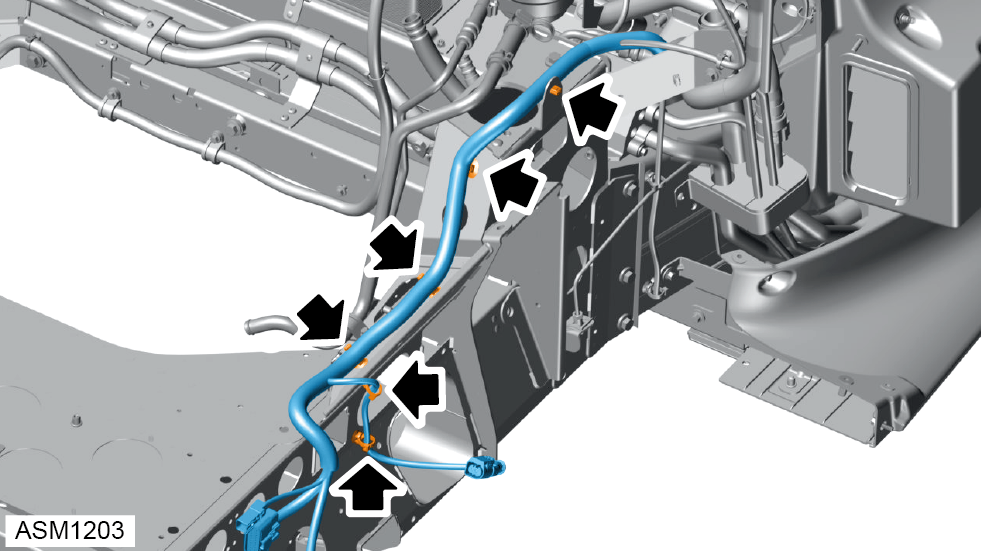
- Disengage clips (x6) securing harness to rear subframe assembly.
- Remove harness and set aside to clear rear subframe assembly.
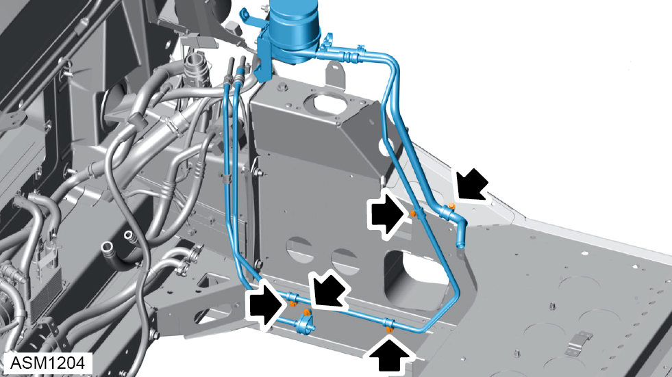
- Remove M6x20 bolts (x5) securing power steering fluid lines to rear subframe. Torque 9 Nm.
- Remove power steering fluid lines and power steering fluid reservoir.
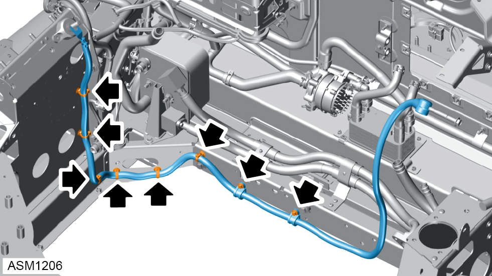
- Remove M6x25 bolts (x2) securing alternator battery cable to rear subframe assembly. Torque 10 Nm.
- Disengage clips (x6) securing alternator battery cable to rear subframe assembly.
- Remove alternator battery harness.
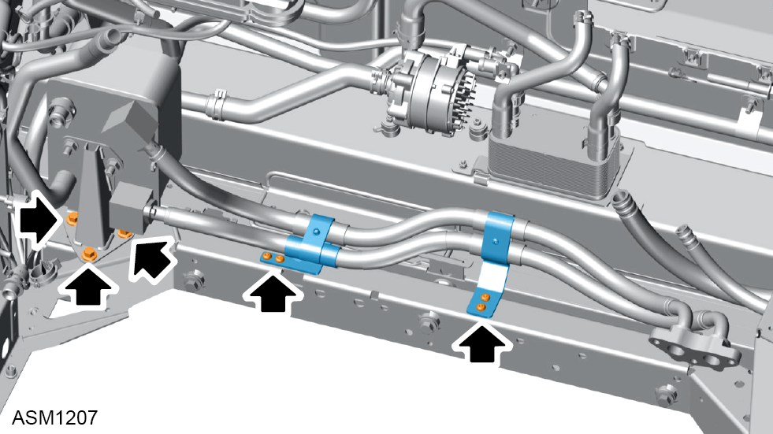
- Remove M6x16 bolts (x4) securing oil cooler hoses to rear subframe assembly.
- Remove M8x20 bolts (x3) securing oil cooler to rear subframe assembly.
- Remove oil cooler assembly and hoses.
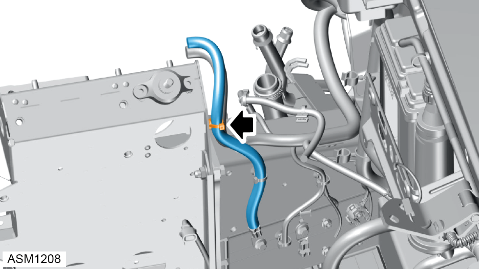
- Disengage clip securing harness to rear subframe assembly.
- Remove harness and set aside.
- Install suitable lifting table under rear subframe assembly.
- Lower vehicle until rear subframe assembly is supported on lifting table.
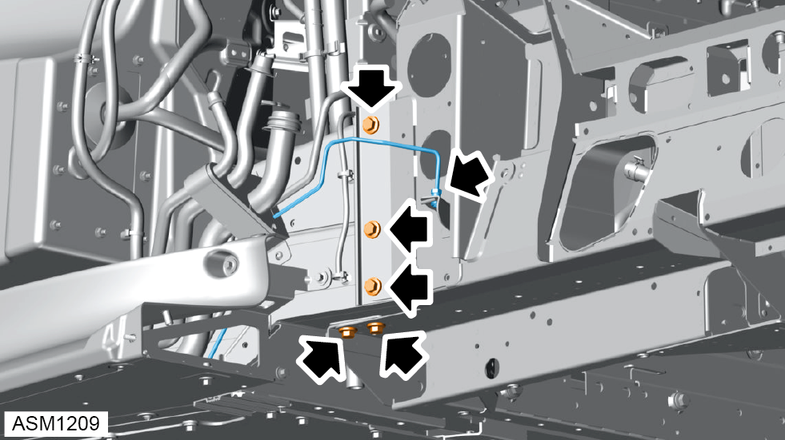
- Disengage rear left side brake line from bracket.
- Remove M10x30 bolts (x5) securing left side rear subframe assembly to bulkhead. Torque 47 Nm.
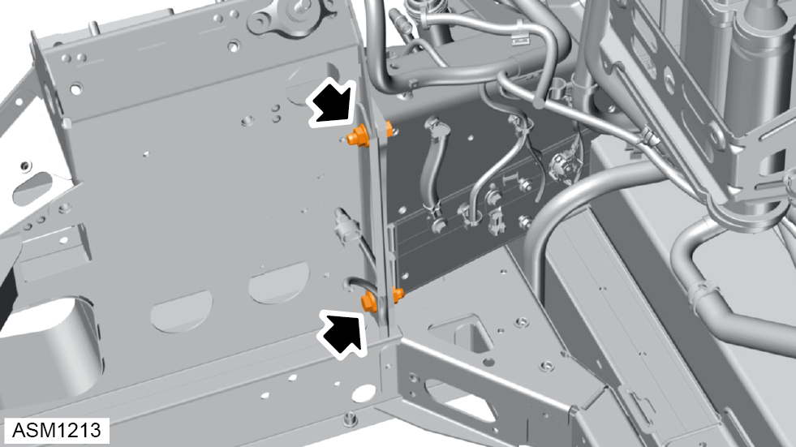
- Remove M10x30 bolts (x2) and nuts securing left side rear subframe assembly to underbody assembly. Torque 47 Nm.
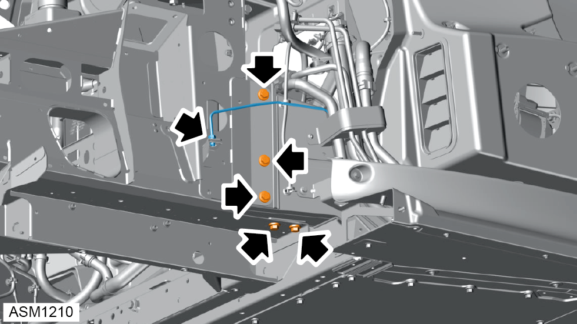
- Disengage rear right side brake line from bracket.
- Remove M10x30 bolts (x5) securing right side rear subframe assembly to bulkhead. Torque 47 Nm.
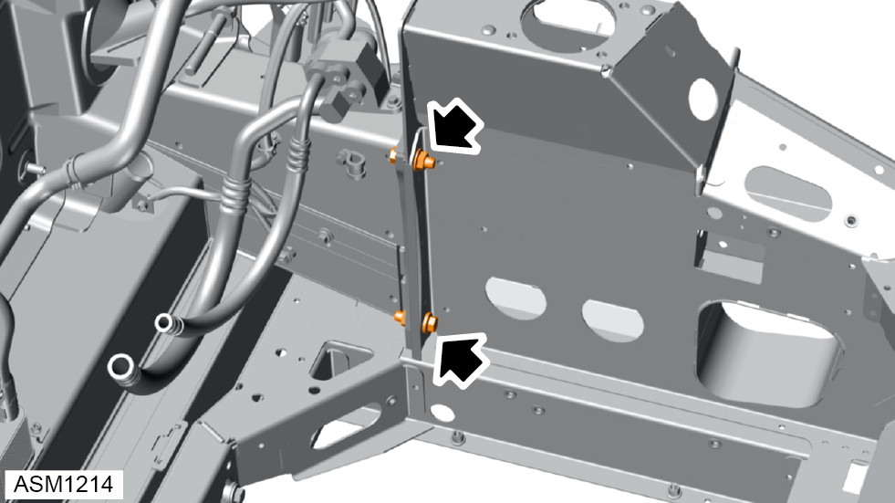
- Remove M10x30 bolts (x2) and nuts securing right side rear subframe assembly to underbody assembly. Torque 47 Nm.
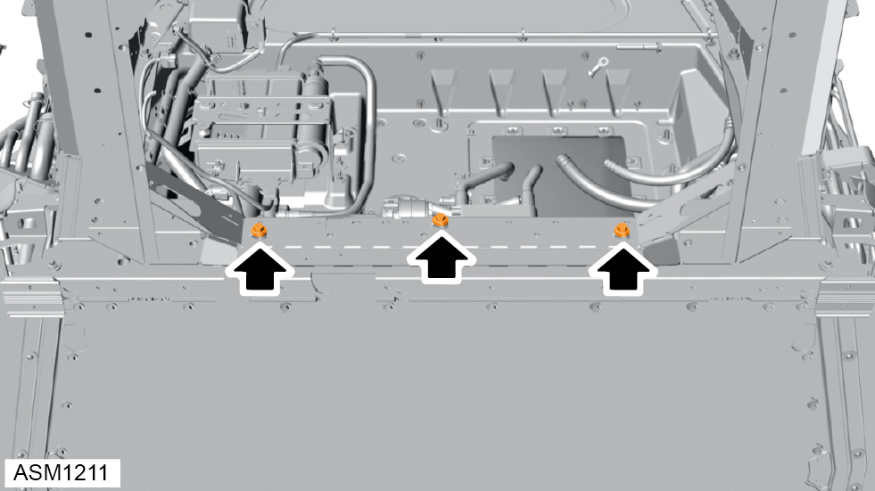
- Remove M10x80 bolts (x3) and washers (x3) securing rear subframe assembly to underbody assembly. Torque 47 Nm.
NOTE: Always record quantity and fitted position of washers.
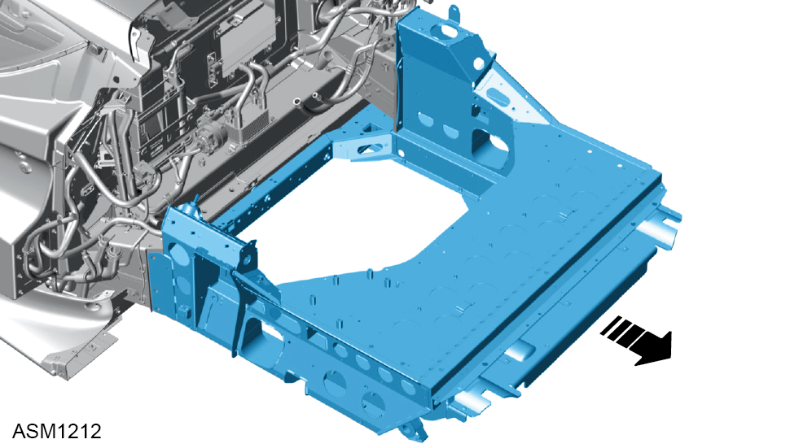
- Remove rear subframe assembly.
- Remove any shim plates from bottom of rear subframe side rails.
NOTE: Always record quantity and fitted position of shim plates.
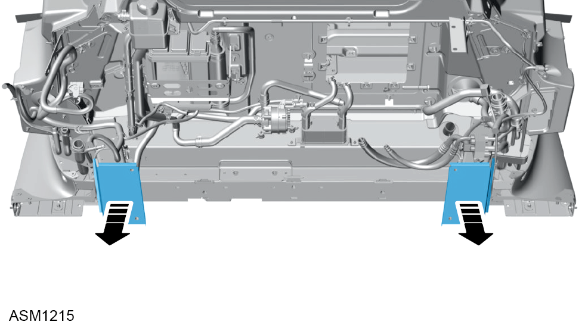
- Remove rear subframe adapter shim plates (x2).
Do not carry out further disassembly if removing for access only.
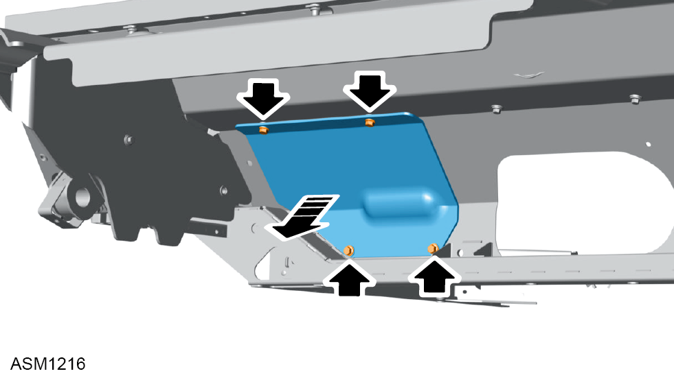
- Remove M6x30 bolts (x4) securing heatshield to rear subframe assembly. Torque 10 Nm.
- Remove heatshield.
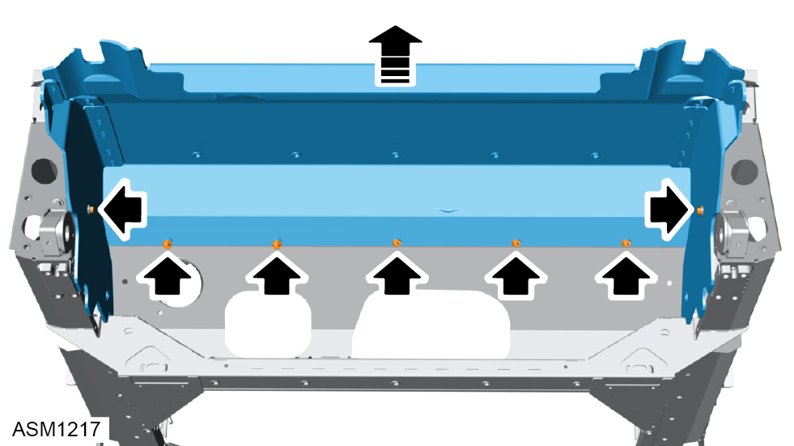
- Remove M6x30 bolts (x5) securing heatshield to rear subframe assembly. Torque 10 Nm.
- Remove M6x25 bolts (x2) securing heatshield to rear subframe assembly. Torque 10 Nm.
- Remove heatshield.
Installation
- Installation is the reverse of removal procedure except for the following:
- Trial fit rear subframe assembly using no shim plates.
- Temporarily fit M10x30 bolts and nuts (x4) during trial installation.
- Measure gap between bottom of chassis side rails and subframe horizontal surface.
- Apply duralac anti-corrosion compound to subframe and shim mating surfaces.
- Install shim plates as required.
- Perform a rear suspension geometry inspection and adjustment. Refer to procedure.